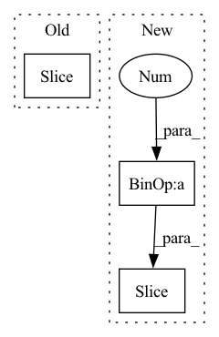

Pattern ID :24470

Before Change
generator = np.random.default_rng(FLAGS.ssl_seed)
indices = list(range(len(sets)))
generator.shuffle(indices)
sets = torch.utils.data.Subset(sets, indices[:subset])
assert len(sets) == subset
return sets
After Change
indexs.append(i)
labels = np.array(labels)
indexs = np.array(indexs)
num_labels = np.max(labels) + 1
assert subset % num_labels == 0
final_indices = []
for i in range(num_labels):
tind = list(indexs[labels == i])
generator.shuffle(tind)
final_indices.extend(tind[: (subset // num_labels)])
sets = torch.utils.data.Subset(sets, final_indices)
assert len(sets) == subset
In pattern: SUPERPATTERN
Frequency: 3
Non-data size: 3
Instances
Fragment ID: 76022621
Project Name: taufikxu/triple-gan
Commit Name: a5806d6c30b93639183d013677660d16145947a4
Time: 2020-06-16
Author: kunxu.thu@gmail.com
File Name: library/data_iters.py
M Class Name: AnonimousClass
N Class Name: AnonimousClass
M Method Name: get_dataset(2)
N Method Name: get_dataset(2)
M Parent Class:
N Parent Class:
M File Name: library/data_iters.py
N File Name: library/data_iters.py
M Start Line: 121
M End Line: 123
N Start Line: 121
N End Line: 138
'>
Before Change
ic(conformer_graph.number_of_nodes())
ic(i)
ic(i + 3)
conformer_graph.ndata["x"] = conformers[i:i + 3]
conformer_graphs.append(conformer_graph)
batched_graph3d = dgl.batch(graphs3d)
After Change
conformer_graphs = [batched_graph3d]
for i in range(1, self.num_conformers):
conformer_graph = copy.deepcopy(batched_graph3d)
conformer_graph.ndata["x"] = conformers[:, i * 3:(i + 1) * 3]
conformer_graphs.append(conformer_graph)
batched_conformers = dgl.batch(conformer_graphs)
batched_graph = dgl.batch(graphs)
'>
Fragment ID: 76022622
Project Name: hannesstark/3dinfomax
Commit Name: d90f479e30d373c31eabebd699666ec3b9101c3a
Time: 2021-06-18
Author: hannes.staerk@gmail.com
File Name: datasets/custom_collate.py
M Class Name: ConformerCollate
N Class Name: ConformerCollate
M Method Name: __call__(2)
N Method Name: __call__(2)
M Parent Class: object
N Parent Class: object
M File Name: datasets/custom_collate.py
N File Name: datasets/custom_collate.py
M Start Line: 64
M End Line: 80
N Start Line: 65
N End Line: 77
'>
Before Change
return -1, variables_to_update
def load_chunk(self, chunk_id: int) -> int:
years_to_iterate_this_chunk = self.years_to_iterate[chunk_id :: self.n_chunks]
self.data_dict, _ = self.load_from_nc_by_years(
self.root_dir, years_to_iterate_this_chunk
)
After Change
def load_chunk(self, chunk_id: int) -> int:
n_years_in_chunk: int = (
len(self.years_to_iterate) + self.n_chunks - 1
) // self.n_chunks
years_to_iterate_this_chunk = self.years_to_iterate[
chunk_id * n_years_in_chunk : (chunk_id + 1) * n_years_in_chunk
]
self.data_dict, _ = self.load_from_nc_by_years(
self.root_dir, years_to_iterate_this_chunk
)
'>
Fragment ID: 76022625
Project Name: aditya-grover/climate-learn
Commit Name: ebae92349bbd7759de5e6fca63c732e12c00704a
Time: 2023-04-07
Author: prakhar6sharma@gmail.com
File Name: src/climate_learn/data/climate_dataset/era5_module.py
M Class Name: ERA5
N Class Name: ERA5
M Method Name: load_chunk(2)
N Method Name: load_chunk(2)
M Parent Class: ClimateDataset
N Parent Class: ClimateDataset
M File Name: src/climate_learn/data/climate_dataset/era5_module.py
N File Name: src/climate_learn/data/climate_dataset/era5_module.py
M Start Line: 187
M End Line: 187
N Start Line: 196
N End Line: 200